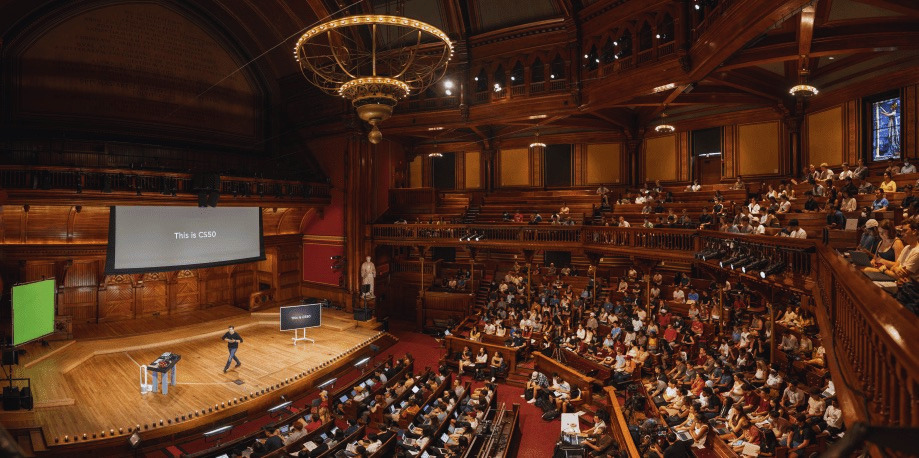

Harvard CS50x: Computer Science (9 of 10 weeks completed)
CS50 was chosen to understand computer science from first principles. More than just syntax, it taught language-agnostic problem solving—how to break complex tasks down methodically. Its rigor exposed and corrected foundational misconceptions, replacing them with a deep understanding of memory, data structures, and algorithms.